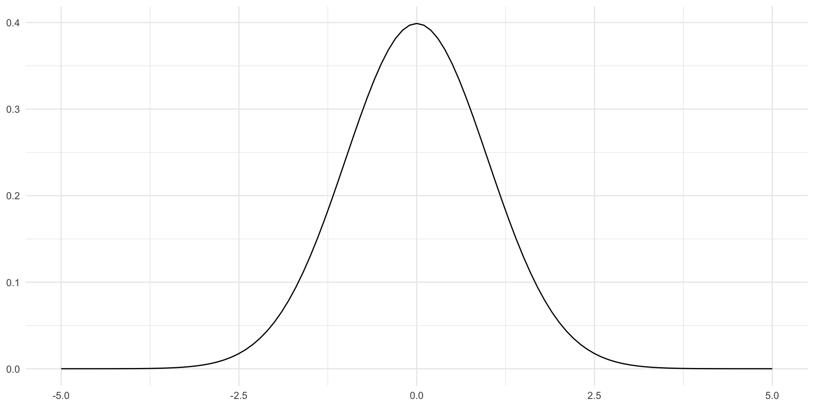

Ekarin E. Pongpipat

| sub | ses | wave | ds_s |
|---|---|---|---|
| 1002 | 1 | -0.5 | 15 |
| 1002 | 2 | 0.5 | 16 |
| 1003 | 1 | -0.5 | 8 |
| 1003 | 2 | 0.5 | 12 |
| 1005 | 1 | -0.5 | 12 |
| 1005 | 2 | 0.5 | 15 |
Accounting for subject
(dependent samples t-test)
\[ DS_{S_{W2_i}} - DS_{S_{W1_i}} = \beta_0 + \epsilon_i \]
# A tibble: 1 × 5
term estimate std.error statistic p.value
<chr> <dbl> <dbl> <dbl> <dbl>
1 (Intercept) 0.182 0.184 0.988 0.325Incorrectly ignoring subject
(independent samples t-test)
\[ DS_{S_{t_i}} = \beta_0 + \beta_1*Wave_{t_i} + \epsilon_i \]
# A tibble: 2 × 5
term estimate std.error statistic p.value
<chr> <dbl> <dbl> <dbl> <dbl>
1 (Intercept) 9.23 0.147 62.9 3.36e-151
2 wave 0.182 0.293 0.620 5.36e- 1Multi-Level Modeling (MLM)
Also known as:
Multiple cognitive measures or MRI data over time for each individual
Multiple related data points within an individual’s wave collected over multiple waves
\[ DV_i = \beta_0 + \beta_1 * X_i + \epsilon \]
MLM allows us to account for variability/error within and between different levels
Level 1: Within-Subject
\[ DV_{t_i} = \beta_{0_i} + \beta_{1_i} * Time_{t_i} + r_{t_i} \]
\[ \beta_{0_i} = \gamma_{00} + \gamma_{01} * Age_{W1_i} + \mu_{0_i} \]
\[ \beta_{1_i} = \gamma_{10} + \gamma_{11} * Age_{W1_i} + \mu_{1_i} \]
Level 1
\[ r_{t_i} = N(0, \sigma^2) \]
Level 2
\[ \mu_{t_i} = N(0, \tau_{t_i}) \]
Level 2 Expanded:
\[ \begin{bmatrix} \mu_{0_i}\\ \mu_{1_i} \end{bmatrix} = N \begin{pmatrix} 0, \tau_{00}^2\ \ \tau_{01}\\ 0, \tau_{01}\ \ \tau_{10}^2 \end{pmatrix} \]
Errors within a subject are normal and variance-covariance of errors between subjects are also normal
Define model
Data processing
Run model
Review model
Visualize model
| sub | ses | age | cesd | ds_s | age_w1 | sex | time | female |
|---|---|---|---|---|---|---|---|---|
| 1002 | 1 | 57 | 2 | 15 | 57 | M | 0 | 0 |
| 1002 | 2 | 62 | 4 | 16 | 57 | M | 5 | 0 |
| 1002 | 3 | 66 | 0 | 16 | 57 | M | 9 | 0 |
| 1003 | 1 | 37 | 11 | 8 | 37 | F | 0 | 1 |
| 1003 | 2 | 42 | 11 | 12 | 37 | F | 5 | 1 |
| 1004 | 1 | 30 | 7 | 8 | 30 | F | 0 | 1 |
Time Points: 2
| variable | effect | varies |
|---|---|---|
| intercept | random | within subject |
| time | fixed | between subjects |
Level 1
\[ DS\_S = \beta_{0_i} + r_{i_t} \]
Level 2
\[ \beta_{0_i} = \gamma_{00} + \gamma_{01} * Time_i + \mu_{0_i} \]
Full Model
\[ \begin{align} DS\_S_{t_i} & = (\gamma_{00} + \gamma_{01} * Time_i + \mu_{0_i}) + r_{t_i} \\ & = \gamma_{00} + \gamma_{01} * Time_i + \mu_{0_i} + r_{t_i} \end{align} \]
| sub | ses | age | cesd | ds_s | age_w1 | sex | time | female | time_mc |
|---|---|---|---|---|---|---|---|---|---|
| 1002 | 1 | 57 | 2 | 15 | 57 | M | 0 | 0 | -1.520833 |
| 1002 | 2 | 62 | 4 | 16 | 57 | M | 5 | 0 | 3.479167 |
| 1003 | 1 | 37 | 11 | 8 | 37 | F | 0 | 1 | -1.520833 |
| 1003 | 2 | 42 | 11 | 12 | 37 | F | 5 | 1 | 3.479167 |
| 1004 | 1 | 30 | 7 | 8 | 30 | F | 0 | 1 | -1.520833 |
| 1005 | 1 | 21 | 6 | 12 | 21 | F | 0 | 1 | -1.520833 |
typically, mean-center if there is an interaction (unless if your variable and estimate are meaningful at 0).
General format:
Code:
Linear mixed model fit by REML. t-tests use Satterthwaite's method [
lmerModLmerTest]
Formula: ds_s ~ time_mc + (1 | sub)
Data: df_long_2ses
REML criterion at convergence: 1443.9
Scaled residuals:
Min 1Q Median 3Q Max
-4.1345 -0.4349 -0.0471 0.3339 2.9746
Random effects:
Groups Name Variance Std.Dev.
sub (Intercept) 2.936 1.713
Residual 2.022 1.422
Number of obs: 336, groups: sub, 215
Fixed effects:
Estimate Std. Error df t value Pr(>|t|)
(Intercept) 9.22001 0.14225 214.33908 64.818 <0.0000000000000002 ***
time_mc 0.03664 0.04077 150.21252 0.899 0.37
---
Signif. codes: 0 '***' 0.001 '**' 0.01 '*' 0.05 '.' 0.1 ' ' 1
Correlation of Fixed Effects:
(Intr)
time_mc 0.062 (Intercept) time_mc
1002 13.864461 0.03664226
1003 9.773489 0.03664226
1004 8.530614 0.03664226
1005 12.390462 0.03664226
1006 10.145395 0.03664226
1007 8.644142 0.03664226The slope is the same, but the intercept is different (random/varies within subject)
Time Points: 2
| variable | effect | varies |
|---|---|---|
| intercept | fixed | between subjects |
| time | random | varies subject |
Level 1
\[ DS\_S_{t_i} = \beta_{0_i} + \beta_{1_i} * Time_{t_i} + r_{t_i} \]
Level 2
\[ \beta_{0_i} = \gamma_{00} + \mu_{0_i} \]
\[ \beta_{1_i} = \gamma_{10} + \mu_{1_i} \]
Full Model
\[ \begin{align} DS\_S_{t_i} & = (\gamma_{00} + \mu_{0_i}) + (\gamma_{10} + \mu_{1_i}) + r_{t_i} \\ & = \gamma_{00} + \gamma_{10} + r_{i_t} + \mu_{0_i} + \mu_{1_i} \end{align} \]
Note: R automatically includes to the intercept and we have to explicitly state 0 to have a fixed intercept
Linear mixed model fit by REML. t-tests use Satterthwaite's method [
lmerModLmerTest]
Formula: ds_s ~ time_mc + (0 + time_mc | sub)
Data: df_long_2ses
REML criterion at convergence: 1498.8
Scaled residuals:
Min 1Q Median 3Q Max
-3.6953 -0.5813 -0.0743 0.3727 3.0547
Random effects:
Groups Name Variance Std.Dev.
sub time_mc 0.000 0.000
Residual 5.005 2.237
Number of obs: 336, groups: sub, 215
Fixed effects:
Estimate Std. Error df t value Pr(>|t|)
(Intercept) 9.21726 0.12204 334.00000 75.524 <0.0000000000000002 ***
time_mc 0.03351 0.05912 334.00000 0.567 0.571
---
Signif. codes: 0 '***' 0.001 '**' 0.01 '*' 0.05 '.' 0.1 ' ' 1
Correlation of Fixed Effects:
(Intr)
time_mc 0.000
optimizer (nloptwrap) convergence code: 0 (OK)
boundary (singular) fit: see ?isSingular (Intercept) time_mc
1002 9.217262 0.03350842
1003 9.217262 0.03350842
1004 9.217262 0.03350842
1005 9.217262 0.03350842
1006 9.217262 0.03350842
1007 9.217262 0.03350842Time Points: 2
| variable | effect | varies |
|---|---|---|
| intercept | fixed | between subject |
| time | random | within subject |
| age_w1 | fixed | between subjects |
Level 1
\[ DS\_S_{i_t} = \beta_{0_i} + \beta_{1_i} * Time_{i_t} + r_{i_t} \]
Level 2
\[ \beta_{0_i} = \gamma_{00} + \gamma_{01} * Age_{W1_i} + \mu_{0_i} \]
\[ \beta_{1_i} = \gamma_{10} + \gamma_{11} * Age_{W1_i} + \mu_{1_i} \]
Full Model
\[
\begin{align}
\begin{split}
DS\_S_{i_t} &= (\gamma_{00} + \gamma_{01} * Age_{W1_i} + \mu_{0_i}) + (\gamma_{10} + \gamma_{11} * Age_{W1_i} + \mu_{1_i})*Time_{t_i} + r_{i_t} \\
&= \gamma_{00} + \gamma_{01} * Age_{W1_i} + \gamma_{10}*Time_{t_i} + \gamma_{11} * Age_{W1_i} *Time_{t_i} \\
&\qquad + r_{i_t} + \mu_{0_i} + \mu_{1_i}
\end{split}
\end{align}
\]
| sub | ses | age | cesd | ds_s | age_w1 | sex | time | female | time_mc | age_w1_mc |
|---|---|---|---|---|---|---|---|---|---|---|
| 1002 | 1 | 57 | 2 | 15 | 57 | M | 0 | 0 | -1.520833 | 3.204651 |
| 1002 | 2 | 62 | 4 | 16 | 57 | M | 5 | 0 | 3.479167 | 3.204651 |
| 1003 | 1 | 37 | 11 | 8 | 37 | F | 0 | 1 | -1.520833 | -16.795349 |
| 1003 | 2 | 42 | 11 | 12 | 37 | F | 5 | 1 | 3.479167 | -16.795349 |
| 1004 | 1 | 30 | 7 | 8 | 30 | F | 0 | 1 | -1.520833 | -23.795349 |
| 1005 | 1 | 21 | 6 | 12 | 21 | F | 0 | 1 | -1.520833 | -32.795349 |
Note: R automatically includes to the intercept and we have to explicitly state 0 to have a fixed intercept
Linear mixed model fit by REML. t-tests use Satterthwaite's method [
lmerModLmerTest]
Formula: ds_s ~ time_mc * age_w1_mc + (0 + time_mc | sub)
Data: df_long_2ses
REML criterion at convergence: 1458.5
Scaled residuals:
Min 1Q Median 3Q Max
-3.3755 -0.7105 -0.0439 0.5528 3.6532
Random effects:
Groups Name Variance Std.Dev.
sub time_mc 0.000 0.000
Residual 4.226 2.056
Number of obs: 336, groups: sub, 215
Fixed effects:
Estimate Std. Error df t value Pr(>|t|)
(Intercept) 9.249069 0.112266 332.000000 82.385 < 0.0000000000000002
time_mc 0.049013 0.054381 332.000000 0.901 0.368
age_w1_mc -0.048459 0.006127 332.000000 -7.910 0.0000000000000387
time_mc:age_w1_mc -0.004309 0.003022 332.000000 -1.426 0.155
(Intercept) ***
time_mc
age_w1_mc ***
time_mc:age_w1_mc
---
Signif. codes: 0 '***' 0.001 '**' 0.01 '*' 0.05 '.' 0.1 ' ' 1
Correlation of Fixed Effects:
(Intr) tim_mc ag_w1_
time_mc 0.002
age_w1_mc -0.032 -0.032
tm_mc:g_w1_ -0.033 -0.031 0.058
optimizer (nloptwrap) convergence code: 0 (OK)
boundary (singular) fit: see ?isSingular (Intercept) time_mc age_w1_mc time_mc:age_w1_mc
1002 9.249069 0.0490125 -0.0484594 -0.004309302
1003 9.249069 0.0490125 -0.0484594 -0.004309302
1004 9.249069 0.0490125 -0.0484594 -0.004309302
1005 9.249069 0.0490125 -0.0484594 -0.004309302
1006 9.249069 0.0490125 -0.0484594 -0.004309302
1007 9.249069 0.0490125 -0.0484594 -0.004309302Time Points: 3
| variable | effect | varies |
|---|---|---|
| intercept | random | within subject |
| time | random | within subject |
| age_w1 | fixed | between subjects |
| sex | fixed | between subjects |
Level 1
\[ DS\_S_{t_i} = \beta_{0_i} + \beta_{1_i} * Time_{t_i} + r_{t_i} \]
Level 2
\[ \beta_{0_i} = \gamma_{00} + \gamma_{01} * Age_{W1_i} + \gamma_{02} * Sex_i + \gamma_{03} * Age_{W1_i} * Sex_i + \mu_{0_i} \]
\[ \beta_{1_i} = \gamma_{10} + \gamma_{11} * Age_{W1_i} + \gamma_{12} * Sex_i + \gamma_{13} * Age_{W1_i} * Sex_i + \mu_{1_i} \]
Full Model
\[ \begin{split} DS\_S_{i_t} &= (\gamma_{00} + \gamma_{01} * Age_{W1_i} + \gamma_{02} * Sex_i + \gamma_{03} * Age_{W1_i} * Sex_i + \mu_{0_i}) \\ &\qquad + (\gamma_{10} + \gamma_{11} * Age_{W1_i} + \gamma_{12} * Sex_i + \gamma_{13} * Age_{W1_i} * Sex_i + \mu_{1_i}) * Time_{i_t} \\ &\qquad + r_{i_t} \end{split} \]
Full Model
\[ \begin{align} \begin{split} DS\_S_{i_t} & = (\gamma_{00} + \gamma_{01} * Age_{W1_i} + \gamma_{02} * Sex_i + \gamma_{03} * Age_{W1_i} * Sex_i + \mu_{0_i}) \\ &\qquad + (\gamma_{10} + \gamma_{11} * Age_{W1_i} + \gamma_{12} * Sex_i + \gamma_{13} * Age_{W1_i} * Sex_i + \mu_{1_i}) * Time_{i_t} \\ &\qquad + r_{i_t} \\ & = \gamma_{00} + \gamma_{01} * Age_{W1_i} + \gamma_{02} * Sex_i + \gamma_{03} * Age_{W1_i} * Sex_i \\ &\qquad + \gamma_{10} * Time_{i_t} + \gamma_{11} * Age_{W1_i} * Time_{i_t} + \gamma_{12} * Sex_i * Time_{i_t} \\ &\qquad + \gamma_{13} * Age_{W1_i} * Sex_i * Time_{i_t} \\ &\qquad + r_{i_t} + \mu_{0_i} + \mu_{1_i} \end{split} \end{align} \]
df_long <- df_long %>%
mutate(age_w1_mc = age_w1 - m_age_w1,
time_mc = scale(time, scale = F),
female_c = ifelse(sex == 'F', 0.5, -0.5))
head(df_long) sub ses age cesd ds_s age_w1 sex time female age_w1_mc time_mc female_c
1 1002 1 57 2 15 57 M 0 0 3.204651 -2.478589 -0.5
2 1002 2 62 4 16 57 M 5 0 3.204651 2.521411 -0.5
3 1002 3 66 0 16 57 M 9 0 3.204651 6.521411 -0.5
4 1003 1 37 11 8 37 F 0 1 -16.795349 -2.478589 0.5
5 1003 2 42 11 12 37 F 5 1 -16.795349 2.521411 0.5
6 1004 1 30 7 8 30 F 0 1 -23.795349 -2.478589 0.5Linear mixed model fit by REML. t-tests use Satterthwaite's method [
lmerModLmerTest]
Formula: ds_s ~ time_mc * age_w1_mc * female_c + (1 + time_mc | sub)
Data: df_long
REML criterion at convergence: 1309.7
Scaled residuals:
Min 1Q Median 3Q Max
-3.8063 -0.5107 -0.0179 0.4543 2.9256
Random effects:
Groups Name Variance Std.Dev. Corr
sub (Intercept) 2.34389 1.531
time_mc 0.02657 0.163 0.03
Residual 1.86809 1.367
Number of obs: 308, groups: sub, 126
Fixed effects:
Estimate Std. Error df t value
(Intercept) 9.287386 0.165912 120.240758 55.978
time_mc -0.001836 0.032633 93.289540 -0.056
age_w1_mc -0.045366 0.009629 121.590599 -4.712
female_c -0.064794 0.331825 120.240758 -0.195
time_mc:age_w1_mc -0.002910 0.001913 95.118994 -1.521
time_mc:female_c 0.021861 0.065266 93.289540 0.335
age_w1_mc:female_c -0.016199 0.019257 121.590599 -0.841
time_mc:age_w1_mc:female_c -0.001364 0.003827 95.118994 -0.356
Pr(>|t|)
(Intercept) < 0.0000000000000002 ***
time_mc 0.955
age_w1_mc 0.0000066 ***
female_c 0.846
time_mc:age_w1_mc 0.132
time_mc:female_c 0.738
age_w1_mc:female_c 0.402
time_mc:age_w1_mc:female_c 0.722
---
Signif. codes: 0 '***' 0.001 '**' 0.01 '*' 0.05 '.' 0.1 ' ' 1
Correlation of Fixed Effects:
(Intr) tim_mc ag_w1_ feml_c tm_:_1_ tm_m:_ a_1_:_
time_mc -0.067
age_w1_mc 0.026 -0.020
female_c -0.247 0.031 -0.147
tm_mc:g_w1_ -0.020 -0.026 -0.059 0.021
tm_mc:fml_c 0.031 -0.183 0.021 -0.067 -0.120
ag_w1_mc:f_ -0.147 0.021 -0.344 0.026 0.044 -0.020
tm_mc:_1_:_ 0.021 -0.120 0.044 -0.020 -0.237 -0.026 -0.059 (Intercept) time_mc age_w1_mc female_c time_mc:age_w1_mc
1002 14.201984 0.13504522 -0.0453662 -0.06479377 -0.002910267
1003 9.185039 0.10800557 -0.0453662 -0.06479377 -0.002910267
1005 11.137925 0.05868963 -0.0453662 -0.06479377 -0.002910267
1006 10.111018 0.02322896 -0.0453662 -0.06479377 -0.002910267
1007 7.898931 -0.20021379 -0.0453662 -0.06479377 -0.002910267
1010 9.308339 -0.05749068 -0.0453662 -0.06479377 -0.002910267
time_mc:female_c age_w1_mc:female_c time_mc:age_w1_mc:female_c
1002 0.0218611 -0.01619893 -0.001363629
1003 0.0218611 -0.01619893 -0.001363629
1005 0.0218611 -0.01619893 -0.001363629
1006 0.0218611 -0.01619893 -0.001363629
1007 0.0218611 -0.01619893 -0.001363629
1010 0.0218611 -0.01619893 -0.001363629| type | abbreviation | definition | note | |
|---|---|---|---|---|
| 1 | Missing Completely at Random | MCAR | Truly random process | Ideal |
| 2 | Missing at Random | MAR | Not completely missing at random and missingness is a measured/predictable process | OK |
| 3 | Missing Not at Random | MNAR | Not missing at random, and unmeasured/unpredictable | Bad |
“Extension” of MLM by including a missingness variable
Let’s incldue all patterns as control/nuisance variables
In our case, we have 4 patterns of missing:
df_missing <- df_wide %>%
filter(sub %in% df_long$sub) %>%
mutate(missing = case_when(
!is.na(time_w1) & !is.na(time_w2) & !is.na(time_w3) ~ 0,
!is.na(time_w1) & !is.na(time_w2) & is.na(time_w3) ~ 1,
!is.na(time_w1) & is.na(time_w2) & !is.na(time_w3) ~ 2,
!is.na(time_w1) & is.na(time_w2) & is.na(time_w3) ~ 3
)) %>%
select(sub, contains('missing'))
head(df_missing) sub missing
1 1002 0
2 1003 1
3 1005 1
4 1006 0
5 1007 1
6 1010 0x: 3 levels, namely 0 (n = 56, 44.44%), 1 (n = 65, 51.59%) and 2 (n = 5, 3.97%)Combine
Run
Linear mixed model fit by REML. t-tests use Satterthwaite's method [
lmerModLmerTest]
Formula: ds_s ~ time_mc * age_w1_mc * female_c + missing_1 + missing_2 +
(1 + time_mc | sub)
Data: df_long
REML criterion at convergence: 1306
Scaled residuals:
Min 1Q Median 3Q Max
-3.7570 -0.4715 -0.0044 0.4458 2.9634
Random effects:
Groups Name Variance Std.Dev. Corr
sub (Intercept) 2.33027 1.5265
time_mc 0.02628 0.1621 0.02
Residual 1.87168 1.3681
Number of obs: 308, groups: sub, 126
Fixed effects:
Estimate Std. Error df t value
(Intercept) 9.555692 0.238187 112.038680 40.118
time_mc -0.006995 0.032840 95.107419 -0.213
age_w1_mc -0.048554 0.009849 119.464405 -4.930
female_c 0.010915 0.334868 118.231360 0.033
missing_1 -0.493858 0.330820 120.324457 -1.493
missing_2 -0.772077 0.865639 123.500338 -0.892
time_mc:age_w1_mc -0.002915 0.001912 95.337461 -1.525
time_mc:female_c 0.022290 0.065194 93.391498 0.342
age_w1_mc:female_c -0.014557 0.019252 119.676547 -0.756
time_mc:age_w1_mc:female_c -0.001443 0.003823 95.166854 -0.377
Pr(>|t|)
(Intercept) < 0.0000000000000002 ***
time_mc 0.832
age_w1_mc 0.00000268 ***
female_c 0.974
missing_1 0.138
missing_2 0.374
time_mc:age_w1_mc 0.131
time_mc:female_c 0.733
age_w1_mc:female_c 0.451
time_mc:age_w1_mc:female_c 0.707
---
Signif. codes: 0 '***' 0.001 '**' 0.01 '*' 0.05 '.' 0.1 ' ' 1
Correlation of Fixed Effects:
(Intr) tim_mc ag_w1_ feml_c mssn_1 mssn_2 tm_:_1_ tm_m:_ a_1_:_
time_mc -0.132
age_w1_mc -0.115 -0.005
female_c -0.077 0.021 -0.174
missing_1 -0.709 0.118 0.162 -0.115
missing_2 -0.275 -0.003 0.179 -0.116 0.224
tm_mc:g_w1_ -0.017 -0.027 -0.061 0.019 -0.001 0.027
tm_mc:fml_c 0.023 -0.181 0.020 -0.073 0.002 -0.011 -0.121
ag_w1_mc:f_ -0.068 0.018 -0.348 0.034 -0.042 -0.047 0.046 -0.020
tm_mc:_1_:_ 0.003 -0.117 0.048 -0.022 0.017 0.001 -0.237 -0.026 -0.067
optimizer (nloptwrap) convergence code: 0 (OK)
Model failed to converge with max|grad| = 0.0025705 (tol = 0.002, component 1)boundary (singular) fit: see ?isSingular(1 + time || sub)@epongpipat